Barton, Nellie Mae/May 1a
| Birth Name | Barton, Nellie Mae/May |
| Married Name | Cox, Nellie Mae |
| Married Name | Beal, Nellie Mae |
| Gender | female |
| Age at Death | 89 years, 8 months, 18 days |
Events
| Event | Date | Place | Description | Sources |
|---|---|---|---|---|
| Birth | 3/30/1884 | Sigourney, Keokuk, Iowa, USA | 2a | |
|
|
||||
| Residence | about 1973 | E. 1921 Central Avenue, Spokane, Spokane, Washington, USA | 3a | |
|
|
||||
| Marriage | 9/5/1931 | Spokane, Spokane, Washington, USA | Marriage to Joe F Rau | 4a 5a 3a |
|
|
||||
| Census | 1940 | Stevens, Spokane, Washington, USA | 6a | |
|
|
||||
| Residence | from 1922 | Spokane, Washington, USA | 5a | |
|
|
||||
| Death | 12/17/1973 | St. Luke’s Memorial Hospital, Spokane, Spokane, Washington, USA | 1a 5a 3a | |
|
Note
Immediate cause: Cerebral Vascular Accident. Due to Atrial Fibrillation (possible embolism). As a consequence of ASHD (atheroscelotic heart disease) |
||||
| Burial | 12/20/1973 | Fairmount Memorial Park, Spokane, Spokane, Washington, USA | 5a | |
|
|
||||
| Marriage | Marriage to: Joel Hartford Cox | 1a | ||
|
|
||||
| Occupation | Housewife | 3a | ||
|
|
||||
Parents
| Relation to main person | Name | Birth date | Death date | Relation within this family (if not by birth) |
|---|---|---|---|---|
| Father | Barton, William Joseph | about 1849 | ||
| Mother | Beasley, Martha Ann | 9/23/1857 | 8/20/1923 | |
| Barton, Nellie Mae/May | 3/30/1884 | 12/17/1973 |
Families
Family of Beal, Henry John and Barton, Nellie Mae/May |
|||||||||||||||
| Married | Husband | Beal, Henry John ( * 1/25/1870 + 10/24/1958 ) | |||||||||||||
|
|||||||||||||||
| Children | |||||||||||||||
| Name | Birth Date | Death Date |
|---|---|---|
| Beal, John Steven | 11/3/1913 | 5/5/1985 |
Media
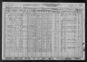
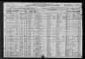
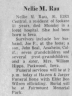
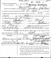
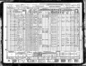
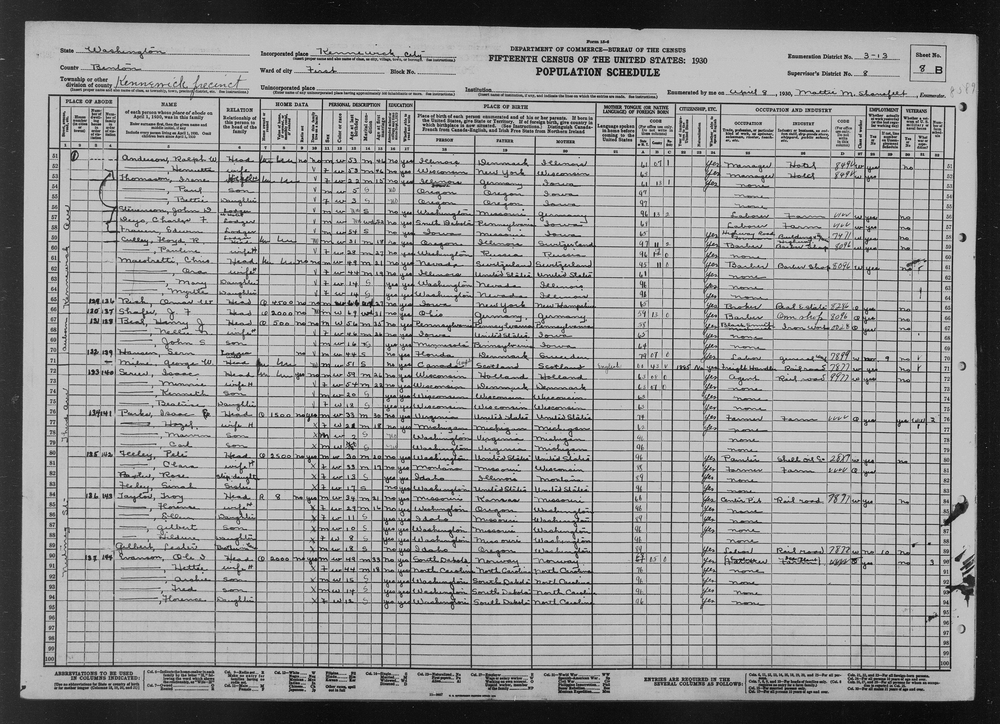
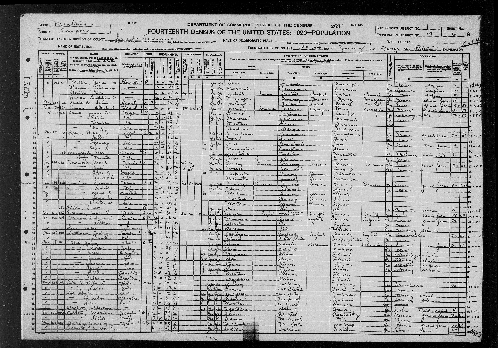
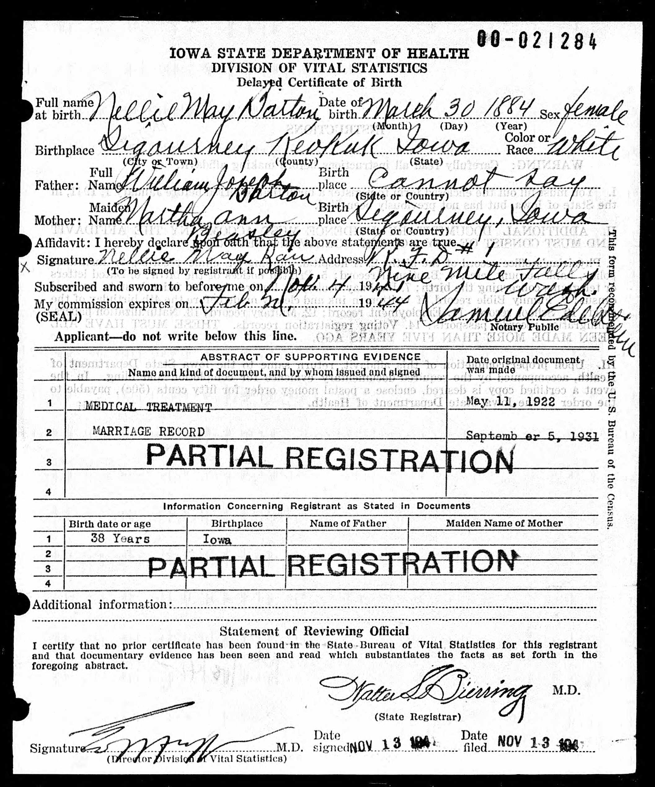
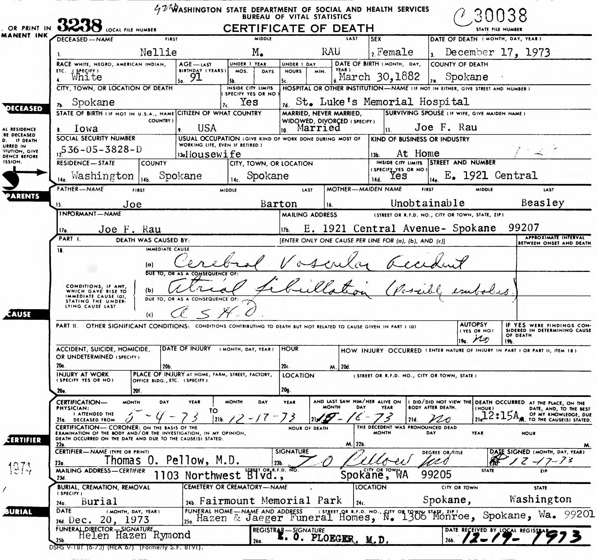
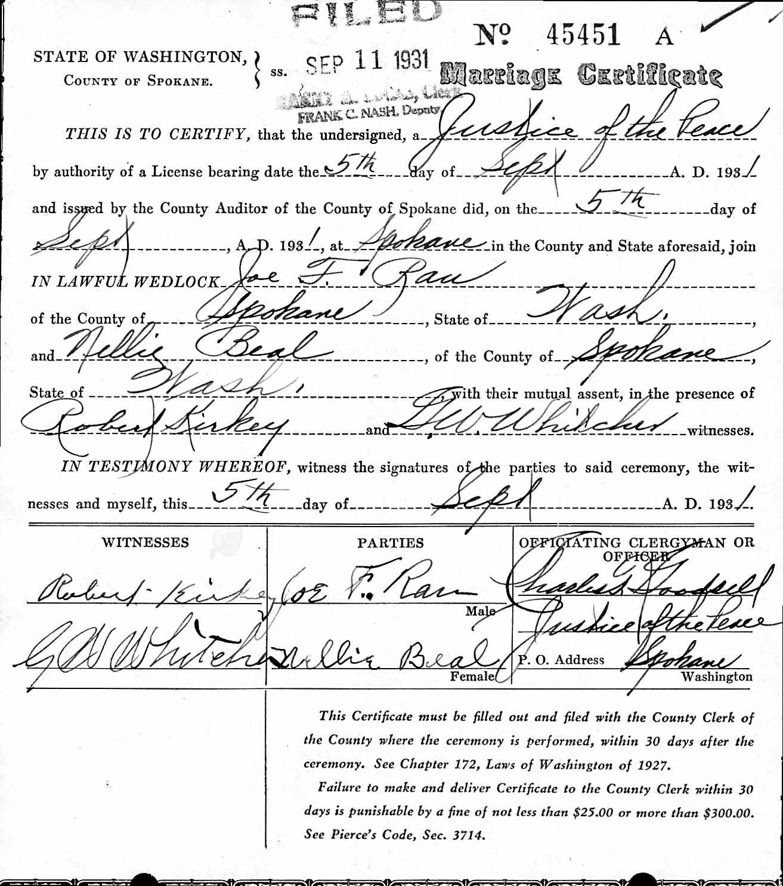
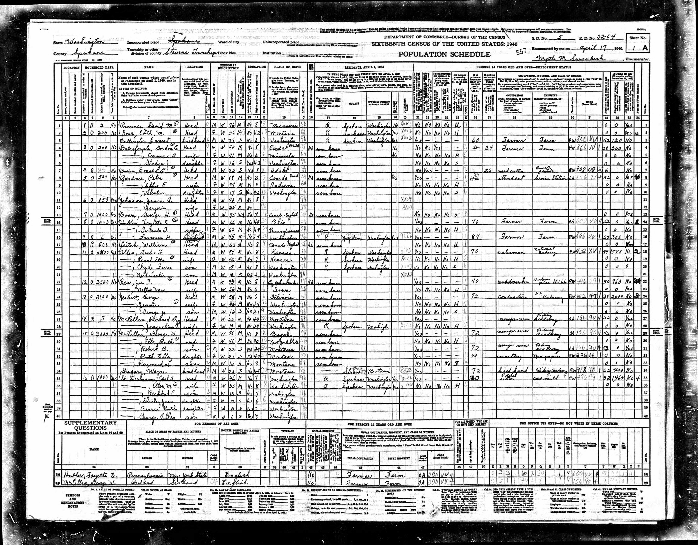
Family Map
Pedigree
-
Barton, William Joseph
-
Beasley, Martha Ann
- Barton, Nellie Mae/May
-
Beasley, Martha Ann
Ancestors
Source References
-
Online Users: MyHeritage Family Trees Webpages
-
- Page: Nellie Mae Barton; https://records.myheritagelibraryedition.com/research/record-1-339007801-1-528867/nellie-mae-barton-in-myheritage-family-trees
-
Citation:
Source:
MyHeritage Family Trees
MyHeritage.com [online database], MyHeritage Ltd.
https://records.myheritagelibraryedition.com/research/collection-1/myheritage-family-treesFamily tree:
Beal Web Site, managed by Christine Beal
https://records.myheritagelibraryedition.com/site-339007801/bealRecord:
https://records.myheritagelibraryedition.com/research/record-1-339007801-1-528867/nellie-mae-barton-in-myheritage-family-treesCitation:
Nellie Mae Cox (born Barton)
Birth: Mar 30 1885 - Keokuk, Lee, Iowa, United States
Death: Dec 1973 - Spokane, Washington, United States
Parents: Joseph B. Barton, Martha Ann Barton (born Beasley)
Siblings: James Franklin Barton, Arthur Barton, Sarah Jane Cox (born Barton), Catherine Vaughn, <Private> Griffen, <Private> Barton, <Private> Newman, <Private> Pfaff, <Private> Barton
Husband: John Henry Beals
Husband: Josef Ferdinand Rau
Husband: Joel Hartford Cox
Children: Richard Lynn Kelly, Thomas Cox Beale, John Stepherson Beals
-
-
Iowa, U.S., Births
-
- Page: Iowa Birth Records, 1888-1904
-
Citation:
State Historical Society of Iowa; Des Moines, Iowa; Title: Iowa Birth Records, 1888-1904
Iowa, U.S., Births (series) 1880-1904, 1921-1944 and Delayed Births (series), 1856-1940
Author
Ancestry.com
Publisher
Ancestry.com Operations, Inc.
Publisher date
2017
Publisher location
Lehi, UT, USA
-
-
Washington Death Index
-
- Page: Washington Death Index, 1940-2017
-
Citation:
Source Citation
Washington State Archives; Olympia, Washington; Washington Death Index, 1940-2017Description
Year Range: I2284593Source Information
Ancestry.com. Washington, U.S., Death Records, 1907-2017 [database on-line]. Provo, UT, USA: Ancestry.com Operations, Inc., 2002.
Original data:Washington State Department of Health. State Death Records Index, 1907-1996. Microfilm. Washington State Archives, Olympia, Washington.
-
-
Washington Marriages
-
- Page: Washington State Archives; Olympia, Washington; Washington Marriage Records, 1854-2013; Reference Number: easpmca45451
-
Citation:
Source Citation
Washington State Archives; Olympia, Washington; Washington Marriage Records, 1854-2013; Reference Number: easpmca45451Description
Year: Marriages 1913 Sep-DecSource Information
Ancestry.com. Washington, U.S., Marriage Records, 1854-2013 [database on-line]. Provo, UT, USA: Ancestry.com Operations, Inc., 2012.
Original data:Washington State Archives. Olympia, Washington: Washington State Archives.
-
-
The Spokesman Review (Spokane, Washington)
-
- Date: 12/20/1973
- Page: Page 8
-
-
Washington Census
-
- Page: 1940; Census Place: Stevens, Spokane, Washington; Roll: m-t0627-04363; Page: 1A; Enumeration District: 32-64
-
Citation:
Source Citation
Year: 1940; Census Place: Stevens, Spokane, Washington; Roll: m-t0627-04363; Page: 1A; Enumeration District: 32-64Description
Enumeration District: 32-64; Description: STEVENS TOWNSHIP, U.S. MILITARY RESERVATION (RIFLE RANGE)Source Information
Ancestry.com. 1940 United States Federal Census [database on-line]. Provo, UT, USA: Ancestry.com Operations, Inc., 2012.
Original data:United States of America, Bureau of the Census. Sixteenth Census of the United States, 1940. Washington, D.C.: National Archives and Records Administration, 1940. T627, 4,643 rolls.
-
-
Iowa, U.S., Marriage Records
-
- Page: Iowa, U.S., Select Marriages Index, 1758-1996
-
Citation:
Source Information
Ancestry.com. Iowa, U.S., Select Marriages Index, 1758-1996 [database on-line]. Provo, UT, USA: Ancestry.com Operations, Inc., 2014.Original data: Iowa, Marriages. Salt Lake City, Utah: FamilySearch, 2013.
FHL Film Number 986014
Reference ID 2:3KB5JFF
-